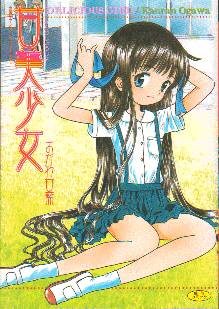
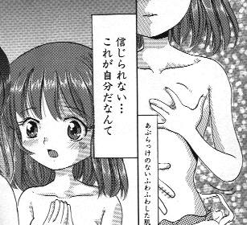
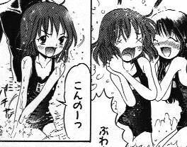
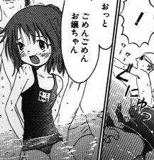
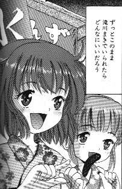

戻る
書評のようなモノ。
「チェンジング・ツアー（前編・中編・後編）」
おがわ甘藍（おがわ・かんらん）
松文館
別冊エースファイブコミックス
『甘美少女』
所収
2003年1月25日発刊

》この作品の感想を閲覧/投稿する
八重洲メディアリサーチの作品リストコーナーには数百にもなる性別変化作品が名前を連ねているが、その中には時折、押入の段ボールを全部ひっくり返してでも読み返してみたくなるような「特別」の作品がいくつかある。理屈ではなく、心の琴線というやつに特別強く触れてくる作品というのは確かに存在する。単純な「面白い・面白くない」「出来がいい・悪い」といった評価とは別次元の話である。簡単にいえば、心にひっかかる物とそうでないもの、という違いになろうか。
さて、最近読んだこの「チェンジング・ツアー」という作品は私にとって前者の仲間入りを果たしそうな予感がある。きっと数年後になっても不意に読み返してみたくなり、またぞろ押入をガサゴソやる羽目に陥りそうだ。
作品について、簡単に内容を紹介してみようと思う。
まずは作品ジャンルだが、これはいわゆる「美少女コミック」に分類されるものだ。いってしまえばポルノ漫画だが、一般的にはアニメ調で毒のない絵柄が特徴といえるだろう。もちろん絵柄がアニメ調なだけで、ポルノである以上、性行為はAV顔負けの過激な描写がなされることも多い。「チェンジング・ツアー」がこの独特なジャンルに属してるということは、作品を語る上でひとつのキーポイントとなるだろう。
冒頭、主人公の男（劇中では名字が“庵部”であるとしか判明しない）が年端もいかない少女たちの躰を金で買ってるシーンから物語は始まる。
ところが、男は少女たちを買いながらも満たされない欲望を胸のうちに抱えている。欲望というより、それは羨望ともいうべき感情で、男は「少女」という存在そのものに強い憧憬の念を抱いていたのである。
“愛くるしい容姿／華やかな声／なぜ少女だけに私の欲しくてならないいくつもの要素が天から与えられているのか”
こう自問する男の外見はなるほど愛くるしさや華やかさからは対極に位置する部類のものである。
“少女になりたい／それだけが私の唯一のそして決して叶わない願望なのだ”
とまで男は言いきる。

『甘美少女』より (C)おがわ甘藍/松文館
ここまでくると羨望を通り越して妄執といってもいいだろう。普通に考えれば、少女といえど男と同じ人間で愛くるしいだけでも華やかなだけでもない。人間である以上根本は男と同じで、汚い言葉を吐けば排泄もするだろう。それはともかく、主人公の男はある種観念的な「少女」という存在への強い憧れから、代償行為として少女買春に走ってるということが描かれている。
その男がある日、不思議なチラシを手にしたことから物語は本題に入っていく。
そのチラシは「魅惑のアナザーボディ・１ウィーク・ツアー」と銘打って、なりたい他人になれるという不思議な「ツアー」の参加者を募るものだった。男は半信半疑ながらも「ツアー」の主催者のもとを訪れる。
そこで出会った虚ろな目をした主催者は他者と魂を交換する術を習得していると称し、「滝川まき」という少女の写真を男にみせる。その少女の体に一週間の間、男の魂を移すことができるというのだ。
そして、驚くべきことに術は本物だったのである。
眠りから目覚めたとき、男は滝川まきの体に入っていた。
鏡を覗くと、乳房がふくらみかけた年頃の可愛らしい少女の姿がそこにあった。
こうして、男の願いは叶えられるのである。

『甘美少女』より (C)おがわ甘藍/松文館
明確には語られないが、物語中では季節は夏休みであるらしい。
滝川まきとなった男は、憧れだった少女としての生活を満喫する。もちろん周囲は誰も、「滝川まき」の正体を疑ったりはしない。彼／彼女は、本来の滝川まきが過ごすであろう夏休みの一日をなぞるように体験する。
物語で描かれるのは、まきの女友達と一緒にプールへ遊びにいく一幕である。
更衣室でほかの女の子たちの着替えを目にして頬を緩めたりはするものの、彼／彼女は少女たちの中に完全に溶け込んでプール遊びを楽しむ。このくだりでの彼／彼女の描写は作為的に少女を演じているというより、肉体の姿に合わせて心も幼い少女のそれになりきっているようにも受け取れる。
そして、少女の姿で過ごすうちに彼／彼女は、少女の側から見た、「男」たちの欲望の眼差しに気づくようになり、それらに不安さえ覚える。
プールの帰り、彼／彼女は少女の肉体への好奇心と性欲に突き動かされるまま、更衣室を覗いていた小学生ぐらいの少年たちを誘い、性交渉を持ってしまう。“間借りしている身でこんな使い方をしてはマキちゃんには申し訳ないが”と思いつつ、少女の瑞々しい性の感覚に身を委ねてしまうのである。
物語後半の展開については、ここではあまり具体的には触れないでおく。

『甘美少女』より (C)おがわ甘藍/松文館
この物語で印象的なのは、ときおり挿入されるモノローグから感じる、萩原朔太郎の詩にも似た極度にナイーブなまでの詩情だ。
物語の展開自体に劇的などんでん返しや、トリックは仕組まれていない。それだけに、ある意味淡々と綴られる少女としての日常・冒険・その結末は、ポルノ的な描写と裏腹に不思議な情感を伴っている。それは決して耽美の世界ではなく、どこか傷つきやすい苦い味わいの詩情であるように思える。
かつて萩原朔太郎を初めて読んだとき「この人は女性として生まれたかったのだろうか？」と思った覚えがある。もちろん作者の事情など切り離して作品を鑑賞するのが本道だろうが、それでも興味は湧く。「チェンジング・ツアー」もやはり、主人公の男の心情がどれだけ作者であるおがわ甘藍氏とシンクロするものであるか興味深いところではある。（おがわ氏が男性であるという仮定での話になるが）
おがわ甘藍氏の単行本を手にとってパラパラと頁をめくってみると、真っ先に気づかされるある一つの特徴がある。
男性の登場人物がみな醜悪なのだ。どこか病的ですらある。
対して、少女たちは、正しく美少女コミックの様式に従って可愛らしく描画されている。
男性が醜悪に描かれているというのは、実は少し語弊があるかもしれない。
両者の間で明らかに異なる絵柄が使い分けられているのだ。
男性の登場人物は、美少女コミックで本来「お約束」となっているアニメ的なデフォルメ手法の恩恵に浴していない。リアルの人間が持つ生物としての生々しい汚さのようなものも容赦なく描かれる劇画調の絵柄だ。じつは男性だけでなく成人女性もこの絵柄で描かれている。
このことで、紙面では「少女」と「それ以外」の対比が鮮明になっている。
“おがわ甘藍ワールド”では、少女たちは人間とは別種の神聖な生き物のようでもある。

『甘美少女』より (C)おがわ甘藍/松文館
「チェンジング・ツアー」の主人公は、少女という存在を羨望した。
では、彼はいわゆる性同一障害といわれる括りに入る人物なのだろうか。
もちろん漫画の人物に対して無意味な問いであると言われればそれまでなのだが、少なくとも作者の提示した描写からは、それは読みとれない。性同一障害の症状は己の肉体に対する不和・違和感だというが、主人公の男はただ強く少女に憧れるだけで、自分本来の肉体を嫌悪しているようには描かれていない。
何度も説明したように、この作品世界の中で「少女」は特別な存在だ。（また、程度の差こそあれ、このことは多くの日本のアニメ・コミック作品にも潜在的に見られる傾向である）
現実の生臭さと醜さを背負っている男たち。
そして、ひたすら綺麗で可愛くある少女たち。
「少女」たちは現実の少女の戯画であると同時に、「現実」に汚染されざるモノの象徴として頁の中に息づいている。
男が「少女になりたい」と願うのは、そのまま「現実の醜さ」から離脱したいという願望とも受け取れる。
とすれば、この作品のストーリーは、一人の男が現実から切り離され、やがてもう一度現実に戻ってくる物語と解釈することもできるだろう。結末部の淡々とした哀愁は、バカンスを終えて学校や職場の存在を思い出した人間の抱く感情と同質のものではなかったか。「チェンジング・ツアー」というタイトルはまさに端的に物語の本質（一面の、ではあるが）をついている。
本作に限らず、おがわ甘藍氏の作品は、現実の生臭さを持つ男性キャラクターと、妖精のような「少女」たちとの間にある勾配をエロスの発生装置としている感がある。「チェンジング・ツアー」で描かれた“有り得ざるもうひとつの子供時代”へのねじれた郷愁は、あるいは氏の作品全般に通底する作家性のパーツなのかもしれない。
（余談）
おがわ甘藍氏の過去の作品についてネット検索で調べている過程で、氏が別名で月刊アフタヌーンで連載を持っておられた（それも、私も知っている比較的メジャーなタイトル）という情報に出くわした。情報が絶対に真実だという保証もないが、アフタヌーン系の男性作家さんにしばしば見られるようなどこかリリカルな作風の匂いは感じていたので、なるほどと妙に納得してしまった。
（八重洲一成）
》この作品の感想を閲覧/投稿する
※このページの画像はすべてコミックス『甘美少女』より引用したものです。著作権法に保証される正当な著作引用の範囲内であると信じますが、著作権者様におかれましてこれらの画像引用が不適当であると判断されました場合、
ご一報
いただければ可能な限り速やかに著作権者様の意向に沿った処置を致します。
八重洲メディアリサーチ